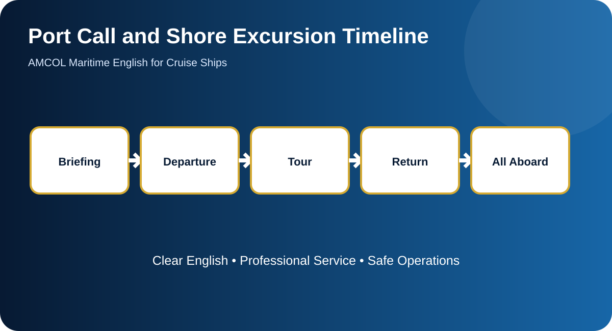

Case Study, Operational Data, and Visual Analysis
Apply the unit language to a realistic cruise situation that requires fact finding, prioritization, departmental coordination, and professional follow-up.
The Weather Delay and the Late Coach
Strong winds delay tender operations. One excursion must be shortened, another group has already traveled ashore, and a coach later reports heavy traffic. Several guests are confused because their phones show local time while the ship remains on ship time. The excursion team must issue confirmed updates, protect return buffers, and coordinate accountability.
Situation Data
| Category | Detail 1 | Detail 2 | Detail 3 |
|---|---|---|---|
| Weather | Strong winds | Tender suspension 0700 | Review at 0800 |
| Ship time | One hour behind local time | All aboard 1730 ship time | Recommended return 1700 |
| Coach 12 | 38 guests and one guide | Traffic delay | ETA 1655 ship time |
| Hiking tour | Original route too long | Short route available | Accessibility unchanged |
Stakeholder Responsibility Map
| Stakeholder | Primary Responsibility |
|---|---|
| Bridge / captain | Determine safe port operation |
| Port agent / authorities | Provide local conditions and clearance |
| Excursion manager | Revise and communicate tour plan |
| Guides and transport providers | Report location, count, and ETA |
| Gangway / security | Account for returning guests |
Seven-Step Decision Process
- Protect life, safety, privacy, and controlled access.
- Confirm identity, location, time, and observable facts.
- Classify urgency and separate confirmed facts from assumptions.
- Contact the responsible department and assign ownership.
- Communicate the next action and realistic time.
- Document the event, handover, and unresolved items.
- Follow up, verify completion, and identify prevention.
Infographic and Comic Scenario

Infographic: Process and communication overview

Comic: Operational communication scenario
Case Analysis Questions
- What are the confirmed facts?
- Which information is still missing?
- What is the immediate service or safety priority?
- Which department or person owns each action?
- Which guest-facing message should be used first?
- Which crew operational message is required?
- What should be documented?
- What time commitment is realistic?
- How should follow-up be confirmed?
- Which prevention measure would reduce recurrence?
Teacher Facilitation Framework
Ask students to distinguish guest-facing communication from internal operational reporting. Score the response for fact accuracy, prioritization, role clarity, realistic timing, documentation, and completion of the feedback loop.
Fully Guided Case Analysis
Case studies should not begin with “What is the answer?” Begin by teaching students how to organize the case. The same seven-part analysis can be reused in service, technical, security, medical, and emergency situations.
Case Unpacked Into Facts
- Known facts: Identify what was directly reported or observed.
- Unknown information: List the details that must be clarified.
- Immediate protection: State what must happen before investigation continues.
- Responsible departments: Separate the first responder, operational owner, and approving authority.
- Communication audiences: Prepare different wording for the guest, responding team, supervisor, and handover record.
- Time control: Record when the event began, when it was reported, and when the next update is due.
- Closure evidence: Decide what proof is needed before the case is considered complete.
Facts Versus Assumptions
| Acceptable Factual Language | Language to Avoid Until Confirmed |
|---|---|
| “The guest reported…” | “The guest is definitely correct about…” |
| “The crew member observed…” | “The department caused…” |
| “The current status is…” | “It will certainly be resolved in…” |
| “The responsible team was notified at…” | “They are already fixing it” when no acknowledgement was received. |
| “No visible hazard was observed at that time.” | “There is no danger” without qualified confirmation. |
Model Communication Package
1. Immediate operational report
2. Guest-facing update
3. Handover line
Decision Explanation
A strong student response must explain why an action is appropriate. Use this sentence frame:
Require students to use at least three unit-specific terms and one exact operational detail in the answer.
Model Case Evaluation
Full-credit responses should protect immediate safety or welfare, avoid unsupported conclusions, identify the correct departments, use exact facts, provide professional guest communication, set a follow-up time, and define closure evidence. Deduct for vague locations, blame, unsafe promises, missing accountability, or language outside the student’s authority.